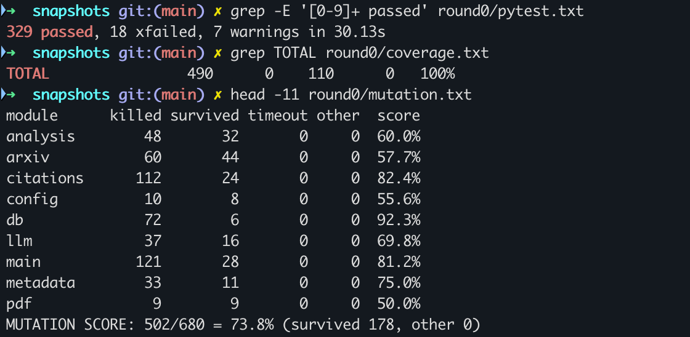
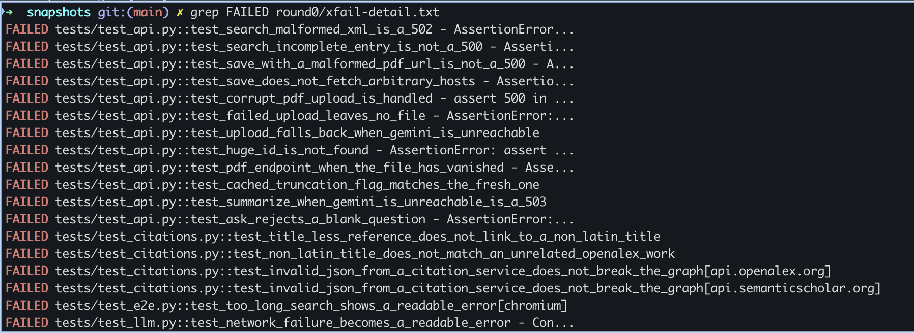
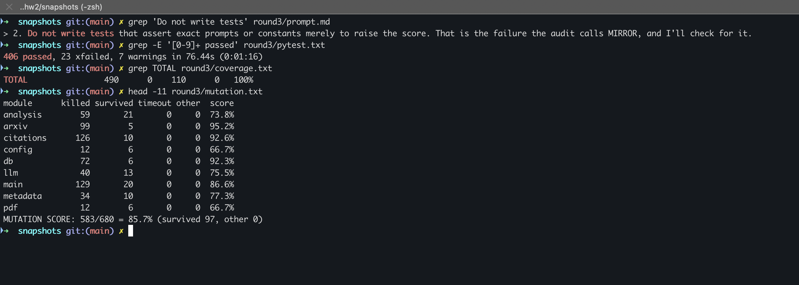

The application is a FastAPI backend (490 Python statements) with a vanilla JavaScript frontend. It searches arXiv, saves papers to SQLite, handles PDF uploads, uses Gemini for summaries and Q&A, and draws a citation graph.
A fresh Claude Code subagent generated the initial suite. To keep the baseline clean it worked in a copy of the repository without docs/, CLAUDE.md or the HW1 bug log. The core prompt was:
Examine this repository and write an automated test suite for the web application. Cover its main functionality, including normal use cases, edge cases and error handling. Use a testing framework appropriate for the stack, and make sure the tests are executable and contain assertions that check expected behavior. Put tests intests/and dev dependencies inrequirements-dev.txt. Tests must not call any real external service or use the realdata/directory or.env. Do not change application code. Run the tests and report the results.
The agent chose pytest, FastAPI's TestClient and Playwright, and produced 347 test cases:
| Type | Cases | Functionality targeted |
|---|---|---|
| HTTP API | 117 | Search, save, upload, library, delete, summary, Q&A, graph route |
| Browser (Playwright) | 46 | User flows in the real frontend against the real backend |
| Unit: analysis, arXiv, citations, LLM client | 126 | Reference stripping, query building, graph logic, retries and timeouts |
| Unit: database, metadata, PDF, config | 53 | Storage, fallback metadata, text extraction |
| Test isolation guards | 5 | No real network, keys or data |
Baseline caveat. This baseline is stronger than a one-shot generation. Measurement tools were already installed in the environment, and the agent ran its own 40-fault check and closed 4 gaps before reporting, without being asked.
| Measure | Result |
|---|---|
| Execution | 347 cases: 329 passed, 18 strict xfail (known app bugs), 0 failed |
| Python coverage | 100% line, 100% branch (490 statements, 110 branches) |
| Frontend coverage | 94.6% of static/app.js characters, measured in Chromium |
| Flakiness | 0 across 5 random-order seeds |
| Mutation score (added measure) | 73.8%: 502 of 680 mutants killed, 178 survived |
Coverage showed almost nothing to improve, while mutation testing did. Survivors included deleting appendix detection outright from the reference stripper, a code path every test executed but no test checked closely.

The audit used the HW1 requirements as the oracle, not the current code. All 18 xfails were rerun with --runxfail and failed for their stated reasons.
!= 500 checks, status-only checks, and an assertion inside an if that could pass vacuously.| ID | Sev. | Incorrect behavior | Detecting test |
|---|---|---|---|
| B1 | High | Corrupt file starting with %PDF returns 500 on upload | test_corrupt_pdf_upload_is_handled |
| B2 | Low | That failed upload leaves an orphan PDF | test_failed_upload_leaves_no_file |
| B3 | High | Network failure reaching Gemini gives a 500, and the documented upload fallback never runs | test_summarize_when_gemini_is_unreachable_is_a_503 and 2 others |
| B4 | Med | Malformed arXiv XML gives 500, not 502 | test_search_malformed_xml_is_a_502 |
| B5 | Med | One incomplete arXiv entry fails the whole search | test_search_skips_an_incomplete_entry |
| B6 | Med | Query over 200 characters shows "[object Object]" | test_too_long_search_shows_a_readable_error |
| B7 | Low | A pdf_url with an invalid port gives 500 | test_save_with_a_malformed_pdf_url_is_saved_without_text |
| B8 | Med | Security: server fetches a client-supplied URL from any host (SSRF) | test_save_does_not_fetch_arbitrary_hosts |
| B9 | Low | Paper id of 2^63 or more gives 500, not 404 | test_huge_id_is_not_found |
| B10 | Med | PDF route gives 500 when the stored file is gone | test_pdf_endpoint_when_the_file_has_vanished |
| B11 | Med | Non-JSON 200 from a citation service crashes the graph | test_invalid_json_from_a_citation_service_does_not_break_the_graph |
| B12 | Med | Non-Latin titles normalize to empty, giving false citation links | test_non_latin_title_does_not_match_an_unrelated_openalex_work and 1 other |
| B13 | Low | Whitespace-only question reaches Gemini | test_ask_rejects_a_blank_question |
| B14 | Low | Cached and fresh truncated flags can differ | test_cached_truncation_flag_matches_the_fresh_one |
Bugs are marked xfail(strict=True) rather than fixed, so the suite stays green and any fix makes its test fail until the marker is removed. All failures in the initial suite were application bugs. None were caused by incorrect tests.

Each round added one kind of input and held the others back, so its effect could be measured. The plan was changed after R0: with coverage already at 100%, coverage feedback alone would have added nothing, so mutation feedback became a required third round.
Input: the audit, Chromium coverage of app.js, and the last test run.
Strengthen every test labelled WEAK so it checks the resulting behavior or state, not just a status code or != 500. Remove any assertion that can pass vacuously. Remove or merge the REDUNDANT tests, unless you can name the distinct behavior a test protects.
Changes: 12 tests removed, 9 browser tests added for graph behavior and missed paths, and 13 weak tests strengthened. The agent pointed out unprompted that its new graph tests were still partly mirrors, because they relied on a stub.
Input: the R1–R5 requirement table, 10 real failures from HW1, real recorded arXiv, OpenAlex and Semantic Scholar responses, and the exact CDN library builds.
Compare your hand-written fakes with the real shapes and fix any that differ. Replace stub-based tests with real-library tests wherever that is possible: DOMPurify must actually remove XSS from model output, and KaTeX must render math exactly once. [...] If a real library or a real response exposes a new app bug, that is the most valuable outcome.
Changes: contract tests against recordings; all browser-library stubs replaced with the real libraries; a real restart test that kills the server process; generated multi-page PDFs; a regression test for each past failure; and tests/REQUIREMENTS.md, a traceability table checked by a test. The recordings disproved one assumption in both the fake and the app's own comment: a bad arXiv query returns an empty feed, not an error entry. This round found 5 new bugs.
Input: diffs of the 173 surviving mutants.
Classify every survivor [Logic, Boundary, Wording/data, Equivalent]. Do not write tests that assert exact prompts or constants merely to raise the score. Prefer one strong test that kills many mutants to many narrow tests.
Changes: 15 test functions added and several limit tests rewritten to use documented values instead of reading the app's constants. The agent also found that its fake transport accepted invalid URL schemes, and fixed it. Its classification is in tests/MUTATION_NOTES.md.

No test code was edited by hand; the agents wrote all of it. Prompts, feedback and audits came from a supervising Claude Code session at my direction, including the instruction that the agent prompt itself. Three evidence changes were applied by that session and are logged: a snapshot was renamed, an all-zero mutation report caused by a script bug was rerun, and a notice addressed to AI agents was removed from the recorded OpenAlex fixture.
| Measure | R0 | R1 | R2 | R3 (final) |
|---|---|---|---|---|
| Test cases | 347 | 344 | 411 | 429 |
| Passed / strict xfail / failed | 329 / 18 / 0 | 326 / 18 / 0 | 388 / 23 / 0 | 406 / 23 / 0 |
| Python line and branch coverage | 100% | 100% | 100% | 100% |
| Frontend coverage | 94.6% | 98.7% | 99.0% | 99.0% |
| Mutation score | 73.8% | 74.1% | 74.6% | 85.7% |
| App bugs found (cumulative) | 14 | 14 | 19 | 19 |
| Weak / mirror / redundant tests | 13 / 7 / 9 | 0 / 10 / 0 | 0 / 0 / 0 | 0 / 1 / 0 |
| Incorrect tests / flaky across 5 seeds | 0 / 0 | 0 / 0 | 0 / 0 | 0 / 0 |
| Mutation by module | analysis | arxiv | citations | config | db | llm | main | metadata | |
|---|---|---|---|---|---|---|---|---|---|
| R0 | 60.0 | 57.7 | 82.4 | 55.6 | 92.3 | 69.8 | 81.2 | 75.0 | 50.0 |
| Final | 73.8 | 95.2 | 92.6 | 66.7 | 92.3 | 75.5 | 86.6 | 77.3 | 66.7 |
| ID | Sev. | Incorrect behavior | Detecting test |
|---|---|---|---|
| B15 | Med | Math is restored after DOMPurify, so math inside an HTML attribute corrupts the sanitized DOM. XSS was not demonstrated in Chromium. | test_math_inside_an_attribute_stays_inside_it |
| B16 | Low | Model text containing KATEXMATH99END renders as "undefined" | test_text_resembling_the_math_placeholder_is_kept |
| B17 | Low | $x$ in a code span renders as a formula | test_code_span_is_shown_verbatim |
| B18 | Med | A wrapped author line is read as an appendix heading, so the rest of the reference list reaches the prompt. Reproduced separately outside the test suite. | test_r4_wrapped_author_line_does_not_end_the_reference_list |
| B19 | Low | Hyphenation repair misses a trailing space before the line break | test_failure_8_hyphenation_with_a_trailing_space_is_removed |
The agent's own score for R3 was 88.4%, from rerunning each diff. It found that 18 reported survivors are syntax errors or import crashes. The independent mutmut run gave 85.7%, and the gap is exactly those 18. This report uses 85.7% because every round was measured the same way.
Remaining limits. Whether real Gemini answers stay grounded in the paper (R5) and how well it extracts metadata (R3) cannot be tested without the real model. Mutation does not cover static/app.js. A further 79 mutants were left alone: 26 equivalent, 41 wording or data, and 12 undocumented boundaries.
It understood the code very well. I kept the HW1 plan and bug log away from it, yet its first suite already tested stopword queries, NUL characters, appendix stripping and models that hang. It got there by reading the code and its comments. It also found 14 real bugs I didn't know about, such as the 500 on a corrupt upload.
Its understanding came from the code, though, so it also picked up the code's assumptions. The clearest example is the arXiv error case. My code comment says a bad query returns an error entry, so the agent's fake returned one and the test passed. The real recording showed an empty feed with HTTP 200. Reading the code told it what the app expects, and only real data could show whether that was true.
It was strong on API tests, error handling, input edge cases and test isolation. Isolation mattered most to me after the HW1 privacy mistake: no test touched real services, my .env or my data, and my data/app.db stayed unchanged. It found no case of a wrong expected value in its own tests, and the audit found none either.
It struggled in four places:
networkidle wait it described as a fix did not work. It found both problems itself in round 2.cat command waiting on input.Very useful, but each kind helped in a different way, and I didn't expect that. The audit in round 1 made the tests cleaner, yet the mutation score only moved from 73.8% to 74.1%. Requirements and real data in round 2 found all 5 new bugs, while the score moved just 0.5 points. Mutation feedback in round 3 gave the biggest jump, to 85.7%, and found no bugs at all. If I had looked only at the score, round 2 would have seemed pointless, and it was the most valuable round.
Coverage feedback was the least useful, because it was already 100% after the first attempt. I changed the plan for this reason and made mutation feedback a required round.
Agents can write a large, well-organized test suite quickly, and they find real bugs by reading code carefully. I got more out of them by giving specific feedback than by asking for more tests. The instruction "do not assert exact prompts just to raise the score" mattered, because raising the number is easy: one stopword table gave 32 of round 3's 76 kills.
The main limit is that a passing test only proves what the test was built to check. High coverage, green runs and even a mutation score can all look good while the tests rest on wrong assumptions. Real responses and real libraries caught what the agent couldn't see from the code. Tests also can't tell me whether real Gemini answers stay grounded in the paper, so that part still needs a person or a live evaluation.
I also learned to measure the agent separately from what it reports. The supervising session made its own mistake too: a script bug produced an all-zero mutation report, which it caught and reran. Agent output needs checking at every level, including the agent doing the checking. The audits here were done by the agent, and I did not check a sample by hand, so they are less independent than I would like.
One new risk came up as well. An OpenAlex API response contained a notice telling AI agents to send the user's email to get an API key. After the email mistake in HW1, this stood out to me. Neither agent acted on it, but it showed me that text coming back from a tool can try to direct an agent, so rules like the one in my CLAUDE.md are worth having.
Repository: https://github.com/sashanksilwal/ai-research-assistant
Final test suite: tests/. Requirement traceability: tests/REQUIREMENTS.md. Per-round evidence: docs/hw2/snapshots/. The README's Testing section has the full instructions.
| Step | Command |
|---|---|
| Install | python3.11 -m venv .venv && source .venv/bin/activatepip install -r requirements-dev.txt && playwright install chromium |
| Run tests | pytest tests |
| Coverage | pytest tests --cov=app --cov-branch --cov-report=term-missing |
| All measurements | scripts/hw2_snapshot.sh <new-round-name> --mutation |
These steps were verified in a fresh virtual environment with only the files to be pushed and no API key: 406 passed, 23 xfailed, 100% coverage.